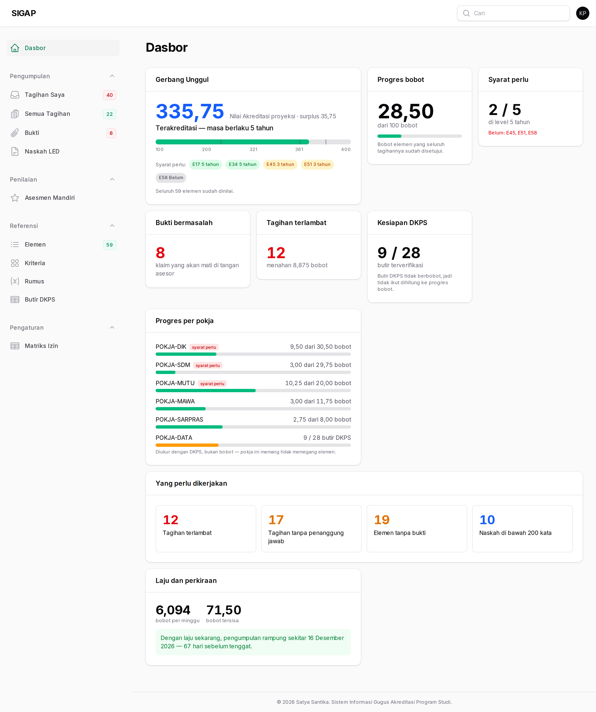
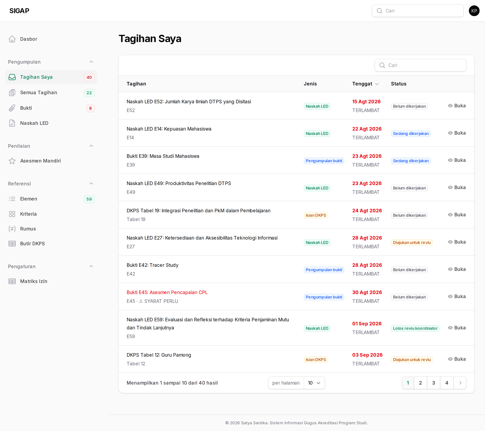
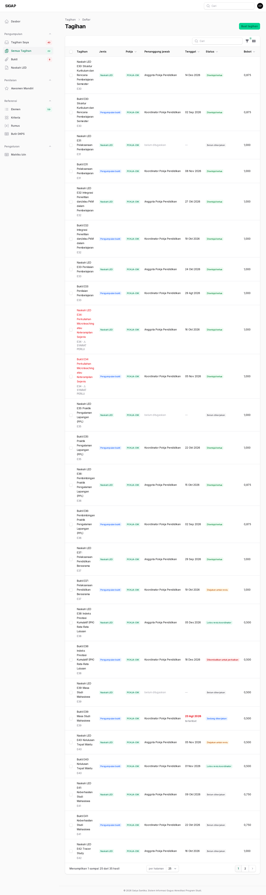
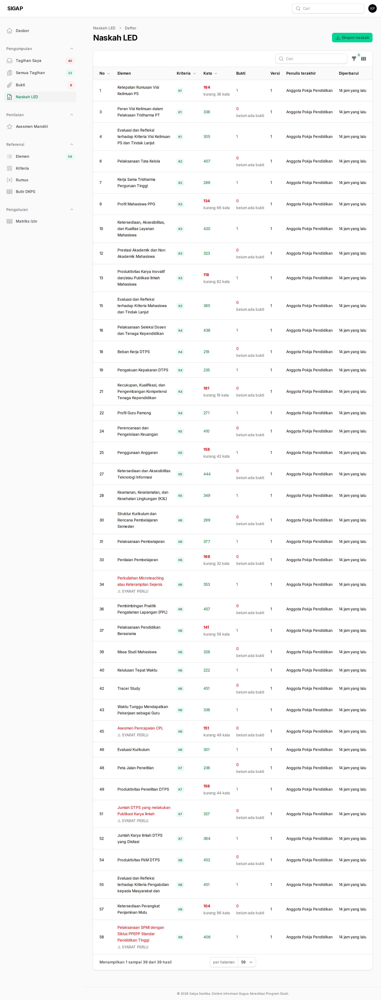
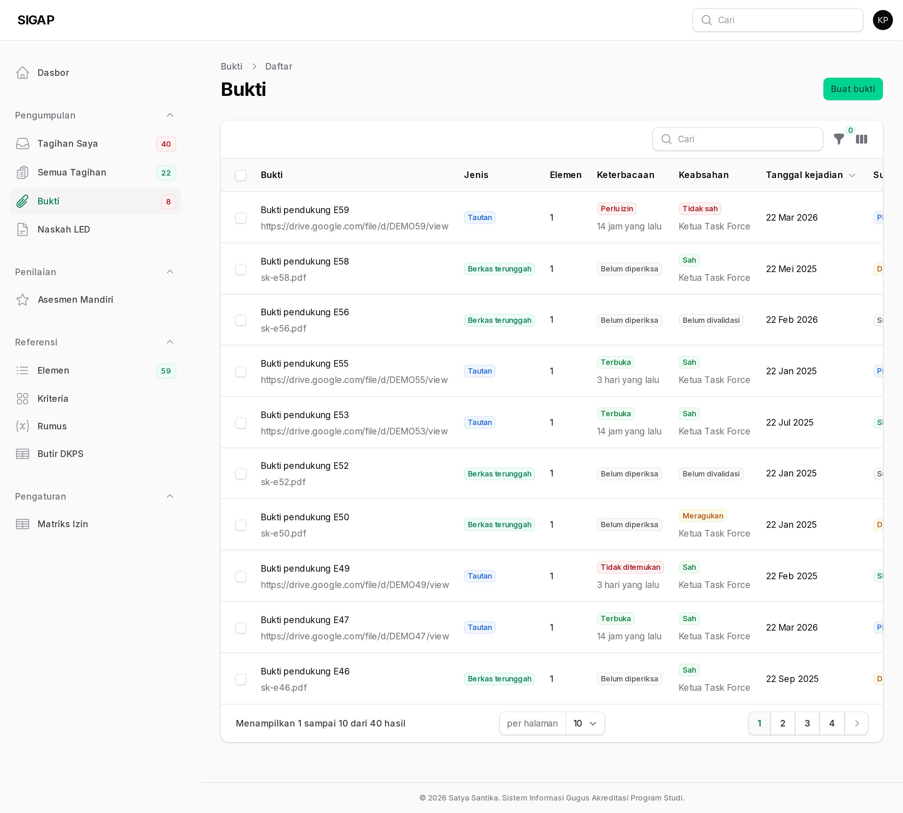
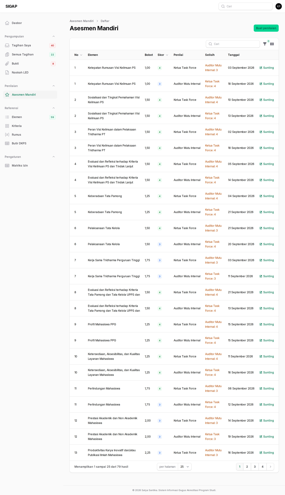

Koordinator bekerja dalam lingkup pokjanya. Hampir seluruh wewenang Anda
bertuliskan pokjanya di matriks izin, yang berarti: hanya baris
yang pokjanya sama dengan pokja tempat Anda terdaftar.
Anda menugaskan, mengubah tenggat, mereviu, dan mengembalikan tagihan — tetapi persetujuan akhir ada pada ketua. Reviu Anda adalah saringan pertama, bukan keputusan terakhir.
Menu Isian DKPS dan Nilai Rumus hanya muncul bila pokja Anda berkode POKJA-DATA. Bila Anda memimpin pokja lain, keduanya memang bukan urusan Anda.
Dasbor
Ubin yang Anda lihat sama dengan peran lain, tetapi angkanya sudah disaring ke pokja Anda. Ubin Progres per pokja berguna untuk membandingkan: pokja yang tertinggal biasanya bukan pokja yang malas, melainkan pokja yang memegang elemen paling berat.

Tagihan Saya
Tagihan yang ditugaskan kepada Anda sendiri — koordinator juga mengerjakan, bukan hanya membagi. Tersaring yang belum selesai, terurut tenggat terdekat.

Tagihan pokja
Menugaskan tagihan adalah pekerjaan koordinator yang paling sering. Tagihan tanpa penanggung jawab tidak akan bergerak sendiri, dan ubin dasbor menghitungnya terang-terangan.
Saat mereviu, perhatikan dua hal sebelum meneruskan ke ketua: buktinya terbaca, dan isinya memang menjawab elemen yang dimaksud. Mengembalikan lebih murah daripada menarik persetujuan.

Narasi pokja
Narasi elemen di pokja Anda. Versi lama tidak pernah hilang, jadi jangan ragu menyimpan draf — menyimpan setengah jadi lebih baik daripada menunda sampai sempurna.

Bukti pokja
Anda memvalidasi keabsahan bukti di pokja Anda. Keterbacaan tautannya diperiksa mesin secara terpisah, tanpa kredensial — jadi tautan yang terbuka di peramban Anda belum tentu terbuka bagi asesor. Percayai status mesin, bukan pengalaman Anda sendiri.

Asesmen mandiri
Koordinator ikut memberi skor 1–4 per elemen. Kolom Selisih menandai elemen yang dinilai berbeda oleh dua penilai — dan itulah yang paling berguna didiskusikan sebelum asesor datang.
